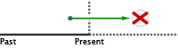

Future perfect continuous
Futuro perfecto continuo
El futuro perfecto continuo o "future perfect continuous" se usa para expresar cuánto tiempo habrá durado una acción en un determinado momento del futuro.
Este tiempo verbal enfatiza la continuidad de un acontecimiento en un momento futuro. Es necesario indicar la duración de la acción (one year, two days, etc.) y el momento futuro que se toma como referencia (tomorrow, next year, etc.).

She will have been working here for five years when she leaves the company.
Habrá estado trabajando aquí cinco años (duración de la acción) cuando deje la compañía (momento de referencia en el futuro).
En el lenguaje coloquial se traduce por:
"Llevar" + gerundio
She'll have been working here for five years by the end of this year.
Llevará trabajando aquí cinco años a finales de este año.
Afirmativo
Sujeto + will + have + been + verbo en forma -ing + ...
| Forma larga | Forma corta |
|---|---|
| I shall/will have been working | I'll have been working |
| You will have been working | You'll have been working |
| He will have been working | He'll have been working |
| She will have been working | She'll have been working |
| It will have been working | It'll have been working |
| We shall/will have been working | We'll have been working |
| You will have been working | You'll have been working |
| They will have been working | They'll have been working |
Ejemplos
| I'll have been running for over an hour. | Llevaré corriendo más de una hora. |
| You will have been saving money for 50 years. | Habrás estado ahorrando dinero 50 años. |
| He'll have been preparing dinner for two hours. | Llevará preparando la cena dos horas. |
| She will have been waiting for two days. | Habrá estado esperando dos días. |
| It´ll have been working properly. | Habrá estado funcionando bien. |
| We shall have been teaching English for at least a month. | Habremos estado enseñando inglés durante al menos un mes. |
| You'll have been driving over 24 hours | Llevaremos conduciendo más de 24 horas. |
| They will have been living together for long. | Llevarán viviendo juntos mucho tiempo. |
Negativo
| Forma larga | Sujeto + shall/will + not + have + been + verbo en forma -ing + ... |
|---|---|
| Forma corta | Sujeto + shan´t/won't + have + been + verbo en forma -ing + ... |
| Forma larga | Forma corta |
|---|---|
| I shall/will not have been working | I shan´t/won't have been working |
| You will not have been working | You won't have been working |
| He will not have been working | He won't have been working |
| She will not have been working | She won't have been working |
| It will not have been working | It won't have been working |
| We shall/will not have been working | We shan´t/won't have been working |
| You will not have been working | You won't have been working |
| They will not have been working | They won't have been working |
Ejemplos
| I'll not have been hiding anything. | No habré estado ocultando nada. |
| You will not have been watching TV. | No habréis estado viendo la tele. |
| He won´t have been playing cards. | No habréis estado jugando a las cartas. |
| She´ll not have been using my bike. | No habrá estado usando mi bici. |
| We shall not have been fighting each other. | No habremos estado pegándonos. |
| You´ll not have been studying hard. | No habréis estado estudiando duro. |
| They won´t have been travelling for over a year. | No llevaréis viajando más de un año. |
Interrogativo
Afirmativo
Shall/Will + sujeto + have + been + verbo en forma -ing + ... ?
Negativo
| Forma larga | Shall/Will + sujeto + not + have + been + verbo en forma -ing + ...? |
|---|---|
| Forma corta | Shan´t/Won't + sujeto + have + been + verbo en forma -ing + ...? |
| Afirmativo | Negativo | |
|---|---|---|
| Shall/Will I have been working? | Shall/Will I not have been working? | Shall/Won't I have been working? |
| Will you have been working? | Will you not have been working? | Won't you have been working? |
| Will he have been working? | Will he not have been working? | Won't he have been working? |
| Will she have been working? | Will she not have been working? | Won't she have been working? |
| Will it have been working? | Will it not have been working? | Won't it have been working? |
| Shan´t/Will we have been working? | Shan´t/Will we not have been working? | Shan´t/Won't we have been working? |
| Will you have been working? | Will you not have been working? | Won't you have been working? |
| Will they have been working? | Will they not have been working? | Won't they have been working? |
Ejemplos
| Will I have been cleaning the house for two hours? | ¿Llevaré limpiando la casa dos horas? |
| Won't you have been driving fast? | ¿No habréis estado conduciendo rápido? |
| Will she not have been living in Japan? | ¿No habrá estado viviendo en Japón? |
| Will she have been travelling to New York? | ¿Habrá estado viajando a Nueva York? |
| Won't it have been flying to London? | ¿No habrá estado volando a Londres? |
| Shall we have been doing the shopping for over two hours? | ¿Llevaremos haciendo la compra durante más de dos horas? |
| Won´t you have been watching TV? | ¿No habréis estado viendo la televisión? |
| How long will you have been studying when you graduate? | ¿Cuánto tiempo llevaréis estudiando cuando os graduéis? |
>
Ejercicios
Escribe el verbo marcado en verde en la forma del futuro perfecto.
he'll/will have been living
I'll/will/shall have been training
we'll/will/shall have been planning
will not/won't/shan't have been doing
Will she have been organizing
will have been filling
won't / will not have been going
Will you and your wife have been traveling
we'll/will/shall have been preparing
I'll/will/shall have been reading